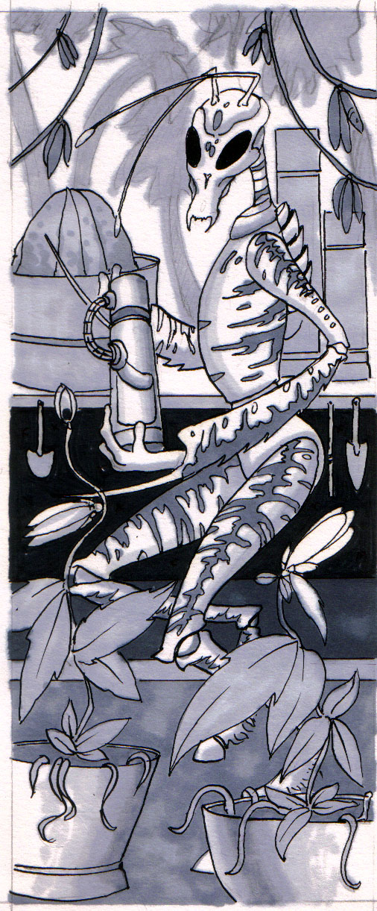
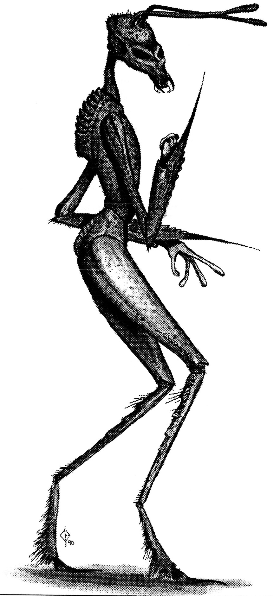
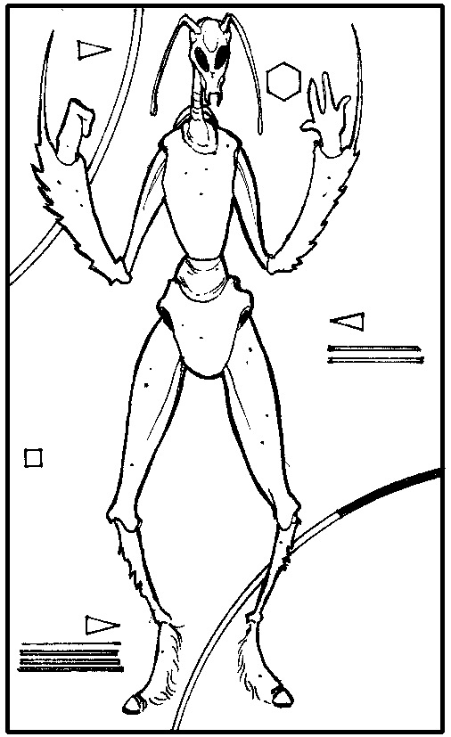
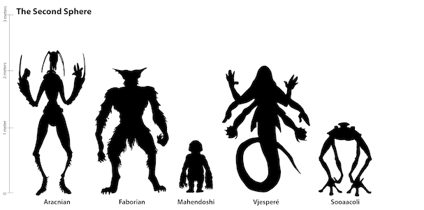

Physiology
Standing over 2.5 meters, on average, an Aracnians physical structure is a testament the light gravity in which they evolved. Only 70% that of Earth they can generally be described as a thin gaunt race, similar in appearance to the praying mantis of Earth. With two arms and two legs connected to a central torso the Aracnians conform to the bi-pedal form that seems to dominate terrestrial evolution. This form seen in many cases our sphere with the Eebek, Low Kaa, and of course Humans, can also be seen in the Second Sphere, examples being the Mahendoshi and Aracnians. Their main means of structural support is a segmented exoskeleton which allows surprising freedom movement and total overall protection. This is not their only means of support, however, in various body parts including their extremities they have developed endoskeletons which allows greater amount of motion and more sensation. The latter being especially critical on the hands and feet while the former movement at the neck and waist easier. Straight bristle like hairs extrude from the shell which play a role in senses. The digestive system begins with the mouth parts, used for ripping and shredding food, and is then passed down the oesophagus to the stomach. Situated between the legs, the stomach's chemical processes are aided by the pumping motion of the legs. There is almost no intestine present because the stomach perform many of the same functions. The upper torso is almost totally filled with the organs for respiration and circulation. These organ system require this large amount of space due to their relative inefficiency. The 'lung' is a simple sac filled with convoluted membranes approximating book lungs. This is only sufficient because the bag can be pressurized to force more of their vital gas, oxygen, into the blood. The opening to the respiratory tract is on the back below and between the arms. The inhaled air is drawn into the sac then held while muscles contract to increase the pressure. The outlet vents, the serrated channels on the upper back, then open and allow the pressurized gas to escape, pulling the waste gas from the blood in the vessels surrounding the openings. This process is then repeated and sounds as if the individual is gasping of wheezing for breath. The heart is equally inefficient, by human standards, and prevents the mixing of oxygenated and un-oxygenated blood by simple channels. The males and females are almost in-distinguishable with the laying of externally fertilized eggs being the method of reproduction.

Senses
Having compound eyes only 40 percent of the Aracnian sensory input is visual, with a tendency to the shorter wave-lengths including the ultra-violet. The other sense have the remaining proportions of 45 percent smell, 10 percent tactile, and 5 in hearing. As expected the two antennae are the major organs of smell and they are extremely more sensitive than the human nose. The touch is provided through the leathery covering of the hands and hearing is through small tympani behind the eyes.

Speech
Consisting mainly of clicks and pops the Aracnian’s language, Chk'Chieb, sounds very much like Fenbic. Often to impress the force of a point or statement they will grind their chimpt together.
Social / Culture
Aracnians can be separated into three populations, the Blue, the Brown, and the Green are designated by the colour of their exoskeleton. This difference stems from the different environments in which each evolved. The Green Aracnians were separated onto a physical area with lush vegetation and the appropriate camouflage colouring developed. The same can be said of the other two. Their cultures are some what different but this is usually limited to the physical differences. Aracnians have a fully developed industrial economy exist and the blue and brown Aracnians tend to dominate this type of work while the green typically stay to farming and more pre-industrial revolution jobs. The traditional family consist of many males all working for a single female in a hive-like arrangement. The males tend the 2-3 hundred young that are normally nurtured in one brood, and provide for the 'queen* lavishly. The modern household is not near as one sided after many small changes that equalized the role of the male and female in the relationship. This version of the 'Sexual Revolution* occurred over 60 years ago and now new marriages are becoming more and more acceptable. These new relationships, where one male and female each have equal rights,

Special Abilities
Sex
Life Span
Second Sphere - Racial Size Comparison Chart

---